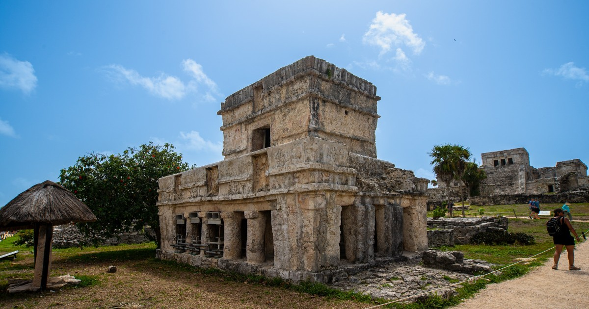
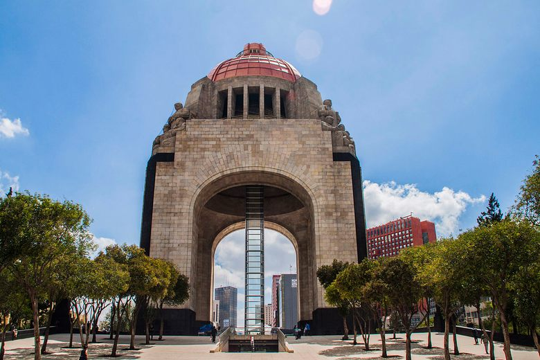
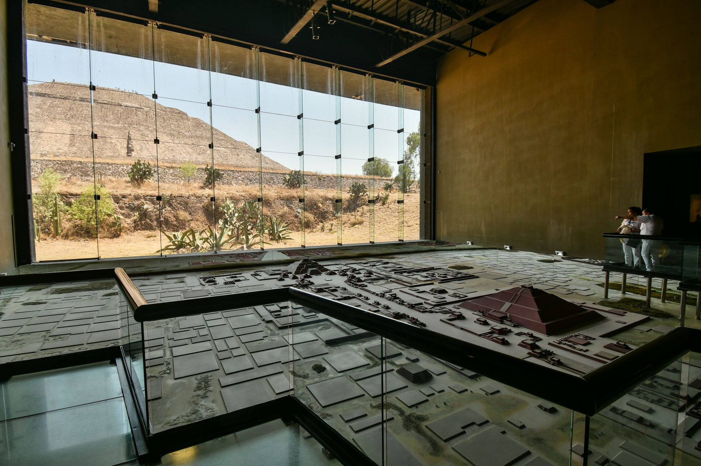

1. Chichén Itzá

La pirámide de Chichén Itzá se llama Kukulcán porque fue construida en nombre de este dios serpiente emplumada.
Era el dios supremo, admirado y temido al mismo tiempo.
Por eso, en la pirámide de Kukulcán, los equinoccios de primavera y otoño permiten ver la sombra del dios-serpiente.
2. Ángel de la Independencia

El monumento Ángel de la Independencia en la Ciudad de México es un homenaje a los héroes de la guerra de independencia de México de España.
Desde 1521, cuando Hernán Cortés derrotó a la nación azteca, hasta principios del siglo XIX, México fue colonia de España, pero separado de ella por el Océano Atlántico.
3. Tulum

El nombre Tulum proviene del hecho de que la ciudad estaba asociada con el este que, en el simbolismo maya, representa el renacimiento y el solsticio de invierno.
Tulum es también una palabra maya que significa barrera o cerco, lo cual se entiende fácilmente ya que la ciudad está rodeada por gruesos muros protectores.
4. Museo de Frida Kalho

Es más precisamente el lugar de nacimiento de la famosa pintora llamada Frida Kahlo.
Fue construido en 1904 y fue cedido en el año 1958 por el muralista Diego Rivera para convertirlo posteriormente en museo.
Este museo está lleno de obras de Frida, así como de sus objetos personales.
5. Monumento a la Revolución
El Monumento a la Revolución es un monumento en la Ciudad de México que conmemora la Revolución Mexicana.
Se encuentra en la Place de la République, que divide Avenue de la Révolution entre Promenade de la Reforme y Avenue des Insurgents.
6. Chapultec

En 1325, luego de la fundación de México-Tenochtitlan.
Chapultepec fue considerado un lugar sagrado y un sitio estratégico por los manantiales que abastecían de agua potable a la capital del imperio.
Durante el Virreinato, Chapultepec siguió siendo un sitio de gran importancia.
7. Castillo de Chapultepec

El Castillo de Chapultepec fue la última residencia de los emperadores aztecas antes de la conquista española.
También fue utilizado como residencia oficial de los presidentes mexicanos hasta 1939.
Es considerado el parque público más grande de la Ciudad de México.
8. Palacio de Bellas Artes

El Palacio de Bellas Artes de la Ciudad de México es el principal teatro de ópera de la Ciudad de México.
Fue diseñado por el arquitecto italiano Adamo Boari en 1901 para reemplazar al antiguo Gran Teatro Nacional destruido en esa fecha, pero su construcción no finalizó hasta 1934.
9. Museo de la cultura Teotihuacana
La ocupación humana del Valle de Teotihuacan es anterior a la era cristiana.
Pero solo entre los siglos I y VII d.C. J-C que este pueblo creció hasta convertirse en una de las ciudades más grandes de América con al menos 25.000 habitantes.
10. Museo Nacional de Antropología

El Museo Nacional de Antropología es uno de los museos más importantes de México y América.
Está diseñado para albergar y exhibir el patrimonio arqueológico de los pueblos de Mesoamérica, así como para reflejar la diversidad étnica actual del país.